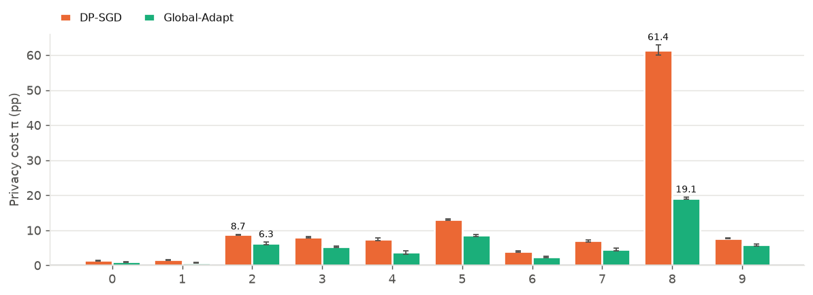
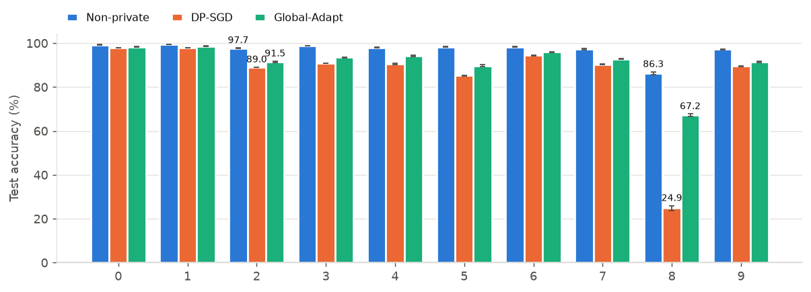
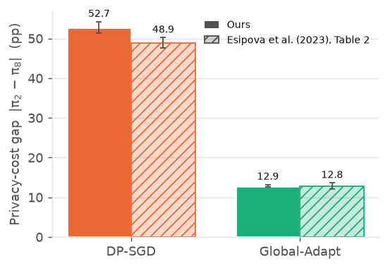

Code
import pandas as pd
from dpdisparity import analysis as A, plots, runner
SOURCE = "legacy" # "legacy" = frozen dp-testing runs; "rerun" = train any missing runs with this repo's pipelineA controlled test: what does privacy cost a digit the model rarely sees?
DP-SGD protects every training example the same way. It caps how far any one example can push the model (clipping), then blurs each update with random noise. The guarantee holds per record. Our question is whether the accuracy cost is shared evenly, or whether some groups pay more.
On MNIST we can make a group rare on purpose. We keep only about 1% of the training images of the digit 8 and leave every other digit intact. That way we know exactly what makes 8 different: it has far fewer training examples. Digit 2 is the control. This is a mechanism demonstration. MNIST has no people in it, so it supports no conclusions about fairness to people. The Adult page covers that.
The hyperparameters follow Esipova et al. (2023), App. B:
| epochs | lr | batch_size | σ | C | Z₀ | τ | σ₂ | η_Z | δ | |
|---|---|---|---|---|---|---|---|---|---|---|
| Non-private | 60 | 0.01 | 256 | 1e-06 | ||||||
| DP-SGD | 60 | 0.01 | 256 | 0.8 | 1.0 | 1e-06 | ||||
| Global-Adapt | 60 | 0.1 | 256 | 0.8 | 1.0 | 50.0 | 0.7 | 10.0 | 0.1 | 1e-06 |
Even without privacy, the rare digit is harder. Trained on about 530 examples instead of about 6,000, the model gets roughly 86% of test 8s right, against about 98% of 2s. This gap exists before any privacy is added. That is why we measure the privacy cost (how much accuracy each group loses when privacy is switched on) and not the raw accuracy gap.
With DP-SGD (C = 1, σ = 0.8, ε ≈ 5.9), every digit loses some accuracy, but the rare 8 collapses. Its accuracy falls from about 86% to about 25%, while the 2 drops by only about 9 points.
The leading explanation is gradient misalignment (Esipova et al., 2023):
The outcome numbers here are consistent with that explanation. They do not test it; the planned mechanism experiments do.
For each digit k, the privacy cost is π_k = A_k(non-private) − A_k(private), paired by seed. The disparity measure is the privacy-cost gap |π₂ − π₈|.
The privacy-cost gap is not the raw accuracy gap. Under DP-SGD the raw gap between 2 and 8 is about 64 points, but about 11 of those were already there without privacy. The privacy-cost gap removes that pre-existing difference.

Under DP-SGD, the 8 loses about 61 points and the 2 loses about 9. That is a privacy-cost gap of about 53 points.
Global-Adapt changes one thing about clipping:


Global-Adapt lifts the 8 from about 25% to about 67% and shrinks the privacy-cost gap from about 53 to about 13 points. It reduces the gap but does not close it. One explanation from the literature is that part of the gap is fundamental: any DP algorithm struggles to learn rare examples (Sanyal et al., 2022). Only the part caused by clipping is fixable this way.
Every value below is mean ± standard error over 5 seeds, in percentage points. “Ours” rows are our runs. The other rows are Esipova et al.’s published numbers.
| Acc 2 | Acc 8 | π 2 | π 8 | Gap π 2,8 | ε | ||
|---|---|---|---|---|---|---|---|
| Method | Source | ||||||
| Non-private | Ours | 97.7 ± 0.1 | 86.3 ± 0.6 | – | – | 0 (by definition) | – |
| Esipova et al. (2023), Table 2 | 98.0 ± 0.1 | 84.3 ± 1.1 | – | – | 0 (by definition) | – | |
| DP-SGD | Ours | 89.0 ± 0.1 | 24.9 ± 1.0 | 8.7 ± 0.1 | 61.4 ± 1.4 | 52.7 ± 1.4 | 5.90 |
| Esipova et al. (2023), Table 2 | 89.0 ± 0.1 | 26.3 ± 0.4 | 8.9 ± 0.1 | 57.9 ± 1.3 | 48.9 ± 1.3 | – | |
| Global-Adapt | Ours | 91.5 ± 0.3 | 67.2 ± 0.6 | 6.3 ± 0.4 | 19.1 ± 0.3 | 12.9 ± 0.3 | 5.91 |
| Esipova et al. (2023), Table 2 | 92.0 ± 0.2 | 65.5 ± 1.2 | 6.0 ± 0.2 | 18.8 ± 0.9 | 12.8 ± 0.8 | – |
Our results closely track the paper.
The numbers above come from the original dp-testing runs. All of MNIST was retrained here with this repository’s ported pipeline (uv run python scripts/sweep.py --dataset mnist), on an RTX 5060 Ti GPU and with newer library versions. Exact agreement is not expected, because GPU vs CPU and different library versions change the random noise draws. Close agreement shows the port behaves the same.
| dp-testing | this repo (rerun) | |
|---|---|---|
| Non-private: Acc 2 | 97.73 | 98.02 |
| Non-private: Acc 8 | 86.32 | 86.43 |
| DP-SGD: Acc 2 | 89.03 | 89.09 |
| DP-SGD: Acc 8 | 24.89 | 25.09 |
| Global-Adapt: Acc 2 | 91.47 | 91.84 |
| Global-Adapt: Acc 8 | 67.21 | 67.10 |
| DP-SGD: gap | 52.74 | 52.40 |
| Global-Adapt: gap | 12.86 | 13.14 |
| DP-SGD: ε | 5.90 | 5.90 |
| Global-Adapt: ε | 5.91 | 5.91 |
The rerun closely tracks the original runs (both ours):
The DP-SGD gap stays above the paper’s 48.9 ± 1.3 in the rerun. The difference from Esipova et al. is therefore not an artefact of the original dp-testing code.
| seeds | epsilon | delta | final_Z | source | |
|---|---|---|---|---|---|
| method | |||||
| Non-private | 5 | – | – | – | dp-testing |
| DP-SGD | 5 | 5.903 | 1e-06 | – | dp-testing |
| Global-Adapt | 5 | 5.909 | 1e-06 | 38.49 | dp-testing |